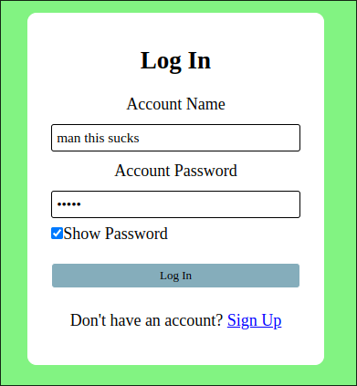
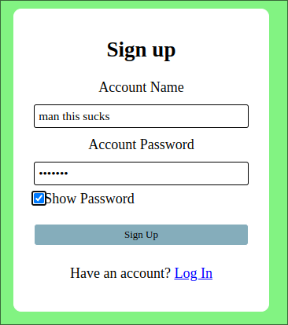

Written in:
and

Nothing much else to say here other than this was pretty much a failed project. The intention was to make it so that you have a login system with a database that stores it. But that plan did not last since it took me longer than expected to get mysql working on linux, and then having to code the thing afterward just killed it. And so it kinda just looks like a regular login and signup page but without actual login or signups going on. It's kinda sad too, since this project was supposed to be the first full-stack project, with front-end and back-end development.
Heres the link to the project: simple-login-signup-no-db-
 By the way. The show passwords were previously working, but I guess they also broke when my mind did.